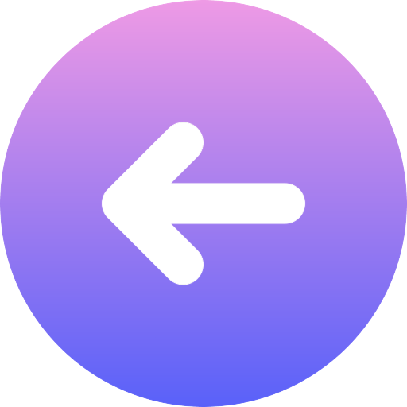

Retour
Intimité
01 - Ouverture
02 - Développement
03 - Immersion
Règles du Jeu
Intimité
Ce jeu comporte 3 étapes !
Dans la première étape, la personne qui répond essaiera de deviner la réponse de l'autre.
Dans la deuxième étape, les deux répondront aux questions, chacun leur tour, avec beaucoup d'attention.
La troisième étape consiste en de petits défis à réaliser une fois par semaine. Ils peuvent être combinés avec l'étape 2.
Ce jeu peut être joué en buvant une boisson légère et romantique, comme un verre de vin ou un cocktail !
Amusez-vous bien ! üçª